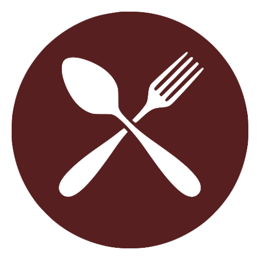
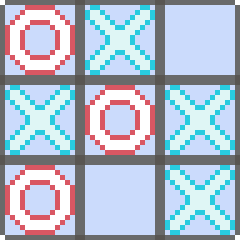
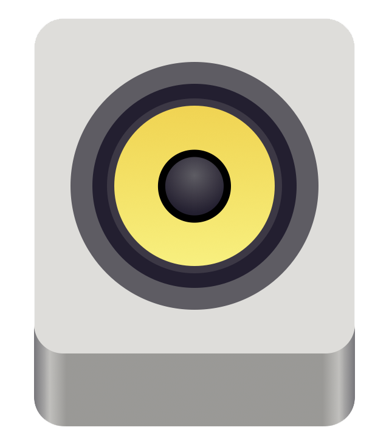
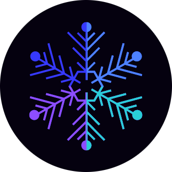

A computer science student, driven learner, and jack-of-all-trades.
From challenging myself to master knitting to learning complex programming concepts and languages, I find immense joy in mastering new skills and expanding my breadth and depth of knowledge.
I grew up in upstate New York surrounded by nature and a small, familiar town. Over time my curious nature led me to technology, and I've never looked back. However, I also hold an equal passion for art, which I also continuously work to improve.
In high school I pursued a rigorous IB diploma to get a headstart in college, and walked away with 53 college credits and a 101.1 GPA. In addition, I began my journey of student leadership and managing a challenging workload on top of maintaining hobbies that I enjoyed.
Currently, I am studying computer science in University with an expected graduation date of Fall 2024. I work as a lab assistant and peer teacher for Intro to CS. Additionally, I am a student in the Virtual Institute of Cyber Operation and Research (VICOR) program with the Department of Defense. In my spare time I love tinkering with new skills, working on passion projects, creating art, reading fantasy novels, and watching other people play video games.
Kotlin
An informational app that lists places to eat in New York City from three common categories: coffee shops, fast food, and restaurants. Created using Kotlin and Jetpack Compose, all information is fictitious, and the app was created solely for learning purposes.
Python
A fun pixel art based tic-tac-toe game with three types of computer players to challenge. The "insane" player uses a recursive N-ary tree to determine the statistically most favorable move.
Python
An easy-to-understand Python script that pulls the currently playing song from Rhythmbox-the native music player for Linux. The song title and artist are written to a file for easy use during streams or other content creation.
A saturated blue and purple theme for Visual Studio Code. Originally created for personal use, but thought it would be fun to turn into a public extension! Over 300 downloads from the VSC marketplace.
